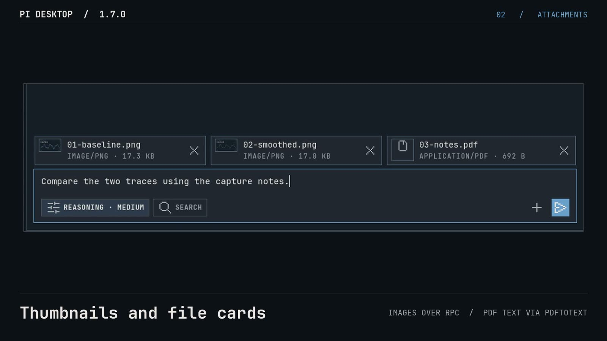
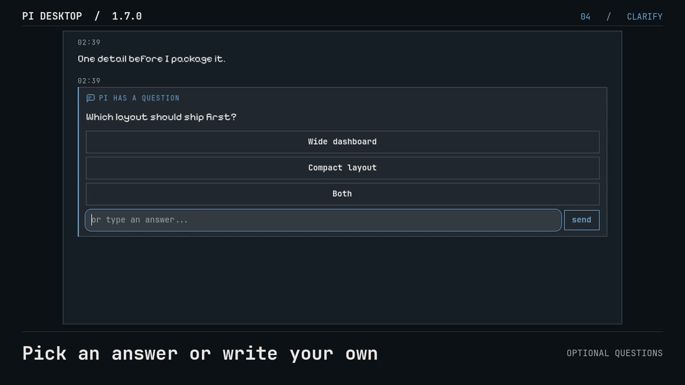
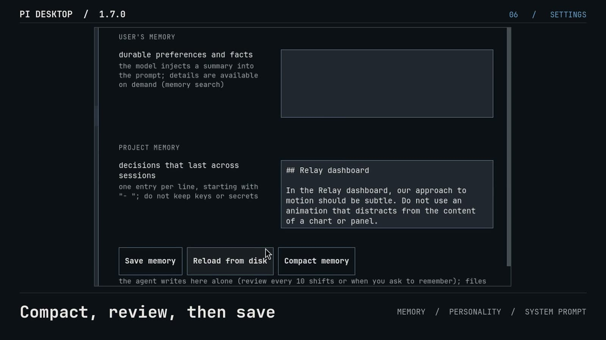
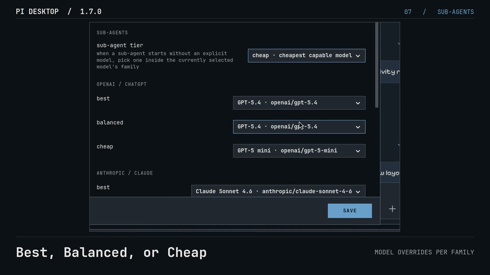

Native GTK4 + libadwaita / 1.7.1
A desktop for the Pi coding agent.
Chat and code in one window: sessions that keep running, memory you can edit, personas, plan mode, permissions, restore points and sub-agents in a resizable rail. It talks to Pi over RPC, locally or over SSH.
$ curl -fsSL https://framet-bit.github.io/Pi-Desktop/install.sh | bash
It compiles on your machine: about 4 to 8 minutes and 1 GB of disk the first time, at low priority with half your cores. After that a rebuild takes seconds, and everything runs offline.




What it does
One window for the whole loop: ask, watch it work, review the diff, keep what matters.
Chat and code modesSwitched from the header; the same conversation can build software or explain it.
Live turn feedbackA pulse under the sent message and a receipt with phase, elapsed time and tokens.
Sessions that surviveEach session runs in its own Pi RPC process, so a new session does not kill a running turn.
Memory you can editDurable preferences and project facts, with compact, review and reload before saving.
Sub-agents in the railDelegated work with best, balanced or cheap tiers, overridable per model family.
AttachmentsImages arrive as thumbnails, other files as cards; PDFs are read as text when pdftotext is present.
Permissions and restore pointsPermission modes, safety rules and file rollback before anything destructive.
Two themes, two fontsIndependent light and dark selections, with Pixelify, JetBrains Mono or the system typeface.
What it needs
Pi Desktop is built against GTK4 4.16 and libadwaita 1.5, which is a distribution package. The installer reads both versions before it compiles anything, so an unsupported system is told so in two seconds instead of failing halfway through the compiler.
| System | GTK4 | Install |
|---|---|---|
| Fedora 41 or newer | 4.16 and up | supported |
| Ubuntu 25.04 or newer | 4.18 and up | supported |
| Debian 13 or newer | 4.18 and up | supported |
| Arch, openSUSE Tumbleweed | current | supported |
| Ubuntu 24.04 LTS | 4.14 | build in a container |
| Debian 12 | 4.8 | not supported |
On a system whose GTK4 is too old the installer stops and asks: upgrade the distribution, or build inside a rootless podman container with --container, which leaves the system packages untouched. Rust 1.83 or newer is installed into the app's own directory when your machine does not have it, so nothing outside your home changes.
Keep it current
The same command does maintenance. Add --dry-run to see the plan before anything happens, and --background to detach the build and keep working.